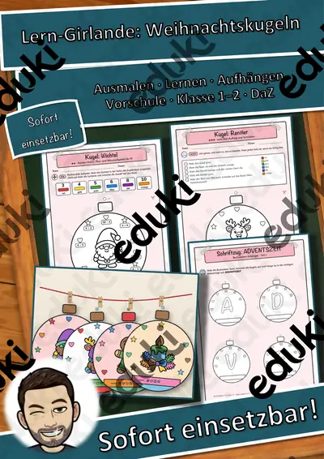
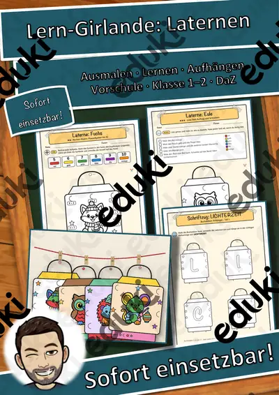
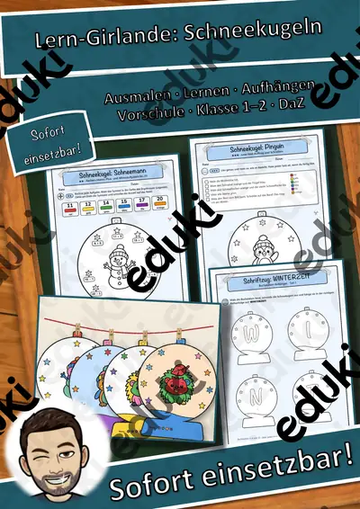
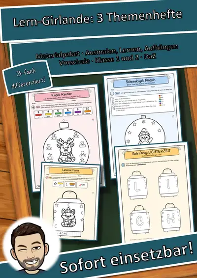

Salzteig-Anhänger – formen, trocknen, bemalen – Lesespurgeschichte mit Rätselaufgaben (Klasse 1)
Salzteig-Anhänger – formen, trocknen, bemalen – Lesespurgeschichte Kunst/Werken (Klasse 1)Schick deine Klasse auf eine Lesespur durch die Schulküche! Mia und Can aus der 1b machen mit Lehrerin Frau Lang Salzteig-Anhänger für den Tannenbaum – Maskottchen ist der Igel Stupsi. Vom Waschbecken über Vorratsschrank, Rührschüssel, Nudelholz, Ausstechformen, Backofen und Farbtisch bis zum Tannenzweig führt der Weg. Am Ende jedes Abschnitts verrät ein Hinweis den nächsten Ort auf dem Plan – nur wer genau liest, findet den Weg und sammelt alle geheimen Buchstaben zum Lösungswort.
Die passende Lesespur für Kunst sowie Werken und Gestalten in Klasse 1 (auch 2) – ideal für die Adventszeit, als Einstieg vor dem eigenen Salzteig-Basteln, für Stationenarbeit oder Vertretungsstunden in der Grundschule. Das Material ist SOFORT EINSETZBAR und in DREI DIFFERENZIERUNGSSTUFEN (leicht ★ / mittel ★★ / schwer ★★★) angelegt.WICHTIG: Das komplette Material ist sowohl in FARBE als auch in SCHWARZ-WEISS enthalten – ideal zum Sparen von Druckkosten.DAS IST ENTHALTEN
- Lesespurgeschichte in 3 Niveaus (leicht, mittel, schwer)
- farbiger Plan der Schulküche als Suchkarte
- Hörverstehen mit QR-Code zur MP3 (selbstständiges Hören mit Kopfhörern)
- vier Aufträge auf dem Weg: eine Zuordnung der Arbeitsschritte, eine Rechenaufgabe bei den Ausstechformen, ein Quiz und ein Steckbrief
- Rätselseite (Wörter-Suchsel + Rätselfragen rund um Salzteig)
- Ausmalbild zum Thema
- ausführliches Lösungsblatt für die Lehrkraft mit allen Lösungen (Lesespur, Aufträge, Hörverstehen, Rätselseite)
- alles zusätzlich als komplette Schwarz-Weiß-VarianteSO GEHT DIE LESESPURDie Schülerinnen und Schüler lesen ab START, finden im Text den nächsten Ort, suchen ihn auf dem Plan und lesen bei dieser Station weiter. An jeder richtigen Station gibt es einen Buchstaben. Eingeplante Sackgassen (Mülleimer, Tafel, Garderobe, Bücherkiste) sind keine Stationen und dienen der Selbstkontrolle. Am Ende werden die gesammelten Buchstaben umgestellt und ergeben ein geheimes Lösungswort. (Die Lösungen sind selbstverständlich nur im Lösungsblatt für die Lehrkraft enthalten.)INHALTLICHER SCHWERPUNKTGrundrezept (2 Tassen Mehl, 1 Tasse Salz, 1 Tasse Wasser), Hände waschen und Schürze, kneten, ausrollen, ausstechen, Loch für das Band, trocknen an der Luft oder mit Erwachsenen im Ofen, bemalen, Salzteig nicht essen, Arbeitsschritte Vorarbeit – Hauptarbeit – Nacharbeit.ABGEDECKTER LEHRPLAN (Klasse 1)
- Werken und Gestalten 1/2 Lernbereich 2 – Materialien mit verschiedenen Sinnen wahrnehmen und ihre Eigenschaften beschreiben.
- Werken und Gestalten 1/2 Lernbereich 3 – Arbeitsprozess in Vorarbeit, Hauptarbeit und Nacharbeit gliedern; Sicherheitsregeln einhalten.
- Werken und Gestalten 1/2 Lernbereich 4 – ein Werkstück zu einem traditionellen Fest gestalten.
- Mathematik – Addieren im Zahlenraum bis 20.
- Deutsch – kurze Texte lesen; einem Hörtext gezielt Informationen entnehmen (Hörverstehen mit MP3).Geeignet für Freiarbeit, Stationenlernen, Vertretungsstunden, Wochenplan und als Einstieg ins Thema.
Ähnliche Materialien

Kunst Ostereier zum Bemalen (auch Vertretung)

Vorräte wie zu Omas Zeiten – Einkochen, Trocknen, Einlegen – Lesespurgeschichte mit Rätselaufgaben (Klasse 3)

Geschenkkarten und Anhänger Weihnachten: 4 Klappkarten, 8 Anhänger und Aufkleb-Figuren (Klasse 1–4)

Lern-Girlande Weihnachtskugeln – Ausmal-Anhänger mit Lernauftrag in 3 Stufen (Vorschule, Klasse 1–2, DaZ)

Lern-Girlande Laternen – Ausmal-Anhänger mit Lernauftrag in 3 Stufen (Vorschule, Klasse 1–2, DaZ)

Lern-Girlande Schneekugeln – Ausmal-Anhänger mit Lernauftrag in 3 Stufen (Vorschule, Klasse 1–2, DaZ)

Lern-Girlande Materialpaket: 3 Themenhefte – Ausmal-Anhänger mit Lernauftrag in 3 Stufen (Vorschule, Klasse 1–2, DaZ)